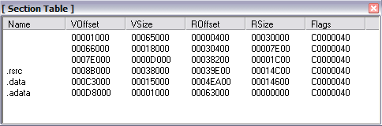
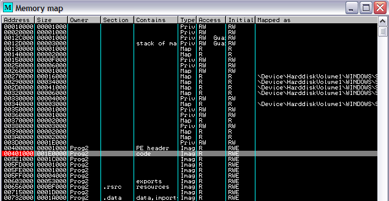
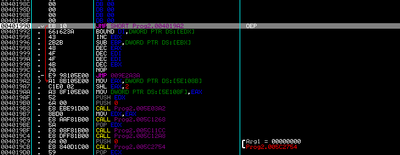
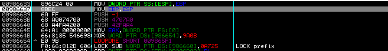
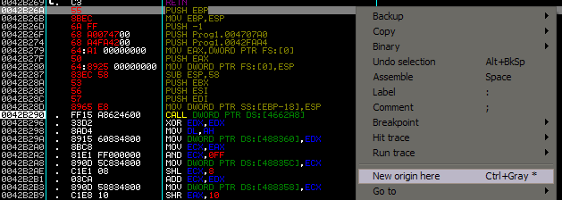
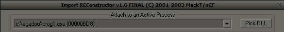
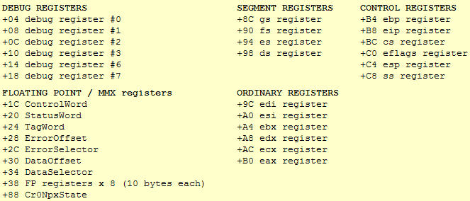

HOWTO - Unpacker ASProtect 1.23 RC4

| Niveau | Outils | Auteur |
|---|---|---|
| Newbie avancé / Intermédiaire | Ollydbg - ImpRec Plugin olly : Ollydump - IsDebugPresent - CommandBar | elooo |
Sommaire
- Introduction
- Présentation brève du packer
- A la recherche de l'OEP avec présence de stolen bytes
- A la recherche de l'OEP sans présence de stolen bytes
- Récupération des stolen bytes
- Stolen bytes : Bonus :)
- Rebuild de l'IAT des différentes études de cas
- Annexe 1 : Introduction à Asprotect 1.31 et 2.0
- Annexe 2 : Structure Context
Introduction
Je me suis apercue, en faisant mes propres recherches sur l'unpacking d'asprotect qu'il n'y avait jamais vraiment
eu de tutoriaux
rédigés en français et encore moins depuis les dernières versions de ce packer.
Il s'avère que peu de personnes ne savent trop comment s'y prendre pour se défaire de cette protection (qui n'a pourtant
rien d'inabordable dans cette version), je pense
encore plus aux utilisateurs d'ollydbg. J'espère donc que ce tutorial
servira à de nombreuses personnes.
Ce tutorial risque d'être relativement long, dans le sens où asprotect est bien différent en fonction des softs
sur lequel il est appliqué. En effet, l'OEP peut être facile à choper
ou au contraire il faudra tracer davantage, on peut se retrouver en présence de stolen bytes etc. J'ai donc décidé
de m'attarder un peu, de présenter plusieurs études de cas, le but n'étant non
pas de faire un tutorial "clef en mains", mais plutôt d'initier à une méthode qui va permettre à tout un chacun de
se défaire d'asprotect 1.23 RC4 (et éventuellement des futures versions). Sachez tout de même
que pour la version 2.0 d'Asprotect (qui est sortie en version alpha dernièrement), l'unpacking risque d'être bien
plus ardu, essentiellement en ce qui concerne la reconstitution du code à l'OEP et le rebuild de l'IAT.
Vous trouverez d'ailleurs à ce sujet, en annexe, le contenu du Readme d'asprotect 1.31, qui vraisemblablement fait apparaître des nouveautés
interessantes dans la protection, qui risque d'ailleurs de se répercuter sur les versions suivantes du packer.
J'envisageais à la base un tutorial plus complet et détaillé mais mon manque de temps et mon Alzheimer ayant amoindri mon enthousiasme pour cette rédaction, j'ai pris la décision d'en faire disparaître un bout... Ceci dit, rien ne m'empêchera par la suite de faire des compléments si j'en ressens le besoin.
Présentation brève du packer
Qu'est-ce qu'Asprotect ?
Asprotect est une protection commerciale conçue par Alexey Solodovnikov. Depuis la toute première version
du packer, de nombreuses choses ont changé, rendant la protection à chaque fois de plus en plus interessante.
Asprotect est un programme écrit en Delphi et protégé avec Aspack (un autre packer du même
concepteur, mais beaucoup moins élaboré).
Asprotect s'adapte à n'importe quel programme, quel que soit le langage utilisé pour la compilation, rendant
difficile la modification du code et y ajoutant un mode d'enregistrement, autrement dit une limitation dans le temps
qui va ensuite permettre la distribution du programme "asprotecté" comme shareware.
Comment Asprotect protège-t-il un programme ?
Asprotect utilise plusieurs niveaux de protection :
1. Il compresse et encrypte le programme original. De ce fait il en réduit la taille et il prévient le désassemblage illégal et la modification du code.
2. A celà s'ajoute une protection anti-debugging, rendant difficile la "lecture" du code protégé.
En fonction des versions d'Asprotect, on trouve de nombreuses méthodes employées d'ailleurs
pour éviter le debugging. On pourra trouver un anti-softice par exemple ou une interdiction de poser des
bpx ou des bpm.
Parlons un peu des méthodes employées par Alexey d'ailleurs :)
Comme je l'énonce également plus bas, il se sert de SEH pour ses tricks anti-debugging. Il faut savoir que lorsqu'une exception
a lieu, le SEH est appelé, mais uniquement lorsque le soft n'est pas débuggé. En cas de debugging, l'exception est envoyée au
debugger et c'est à nous de décider ce que nous voulons en faire.
Utiliser les exceptions pour l'anti-debugging a plusieurs avantages : ça fait perdre du temps au cracker, de nombreuses
exceptions devront être résolues à la main, le debugger étant incapable de rendre la main proprement et enfin certaines
exceptions ne sont pas évidentes à comprendre.
Nous verrons qu'avec ollydbg, au contraire nous saurons tirer parti des SEH, et même les utiliser à notre avantage pour tracer
plus vite.
J'ai signalé plus haut qu'on ne pouvait pas poser de bpm. En effet, ceci est du au fait que les Debug Registers vont être reécrits :
mov eax, [eax+C] ; pointe vers la structure du context
add [eax+b8],2 ; permet d'incrémenter eip de 2 pour qu'il pointe vers
; l'instruction après celle qui a provoquée l'exception.
...
push ecx ; sauvegarde ecx sur la pile
xor ecx, ecx ; ecx = 0
mov [eax+4], ecx ; DR0 = 0
mov [eax+8], ecx ; DR1 = 0
mov [eax+C], ecx ; DR2 = 0
mov [eax+10], ecx ; DR3 = 0
mov [eax+18], 155 ; DR7 = 155
pop ecx ; récupère ecx
xor eax, eax ; retourne à l'handler du SEH
ret ; on sort
(Vous trouverez dans l'annexe 2, à la fin du tutorial, un dump partiel de la Structure Context).
Vraisemblablement, il n'y a pas de check ensuite sur l'état des Debug Registers, donc il serait alors
possible de nopper ce trick.
Mais je ne préfère pas m'avancer, je n'ai pas vérifié sur les cibles que je présente ici :p
Tous les SEH d'asprotect ne débouchent pas forcément à une reécriture des Debug Registers.
L'instruction qui va engendrer l'exception est la suivante MOV DWORD PTR DS:[EAX],EAX, puisqu'on va
tenter d'écrire à l'adresse 00000000.
A ce moment là l'exception handler est exécuté :
push adresse ; met l'adresse sur la pile
inc [esp] ; [esp] = adresse+1
ret ; on continue en adresse+1
adresse+1:
mov eax, [esp+0Ch] ; eax pointe vers la structure du context
add [eax+b8],2 ; incrémente eip de 2 (2 car on veut sauter à l'instruction
; qui suit celle qui a déclenché l'exception, et que cette
; fameuse instruction fait justement 2 bytes)
xor eax, eax ; met eax à 0
ret ; on jump à la prochaine instruction
Il suffirait de nopper l'instruction qui provoque l'exception pour que ce trick soit anéanti aussi (je vous rappelle que pour nous, là ce n'est pas le but, puisqu'on va s'en servir à notre avantage. C'est seulement à titre informatif que j'énonce ceci :)).
A noter qu'Alexey utilise aussi IsDebuggerPresent pour la détection d'un debugger (qui peut déboucher sur une messagebox nous signalant qu'un debuggeur est actif),d'où l'usage du plugin d'ollydbg adéquat.
3. Il modifie les sections du PE Header. Ici le programme doit être chargé en mémoire avant d'être executé. Si nous observons le PE Header d'un programme asprotecté avec LordPE par exemple nous verrions que les sections diffèrent remarquablement de l'original. Les premières sections n'ont pas de nom, Asprotect les effaçant. La taille d'une section dans le fichier (raw size) est plus petite que la taille qu'elle occupe en mémoire quand le programme y est chargé (virtual size). Ceci est du à la compression. La première section à s'éxecuter et celle qui contient les propres routines d'Asprotect.
4. Destruction et redirection de l'IAT.
Tous les programmes compilés pour Win32 utilisent des Api de windows (et parfois d'autres dll) qui contiennent
des fonctions que le programme va utiliser. Dans le but d'afficher un message dans une petite fenêtre avec un
bouton pour valider il n'est pas nécessaire de reécrire tout le code. il suffit de pusher
quelques paramètres sur la pile et d'appeler la fonction MessageBoxA par exemple. Cette fonction est
localisée dans Kernel32.dll et chargée avant l'éxecution, en mémoire.
Cette position en mémoire n'est pas fixe en fonction des programmes.
Nous verrons que lorsque un appel à lieu à une Api, il appelle un endroit du programme où se trouve un saut du
type jmp [adresse] où [adresse] est un endroit dans la mémoire où se trouve le début de MessageBoxA.
Quand nous executons un programme, l'information du PE Header est lue, un espace dans la mémoire est
réservé et les différentes valeurs des [adresse] de chaque Api nécessaires y sont
chargées.
C'est ce qu'on appelle l'IAT.
Asprotect détruit la majeure partie de l'IAT dans le sens où toutes les adresses sont redirigées
par Asprotect.
Si on reprend l'exemple de la MessageBoxA, l'appel correspond cette fois à un jmp [ASPROTECT_adresse],
[ASPROTECT_adresse] étant un endroit dans le code appartenant à une section d'Asprotect. Autrement dit, Asprotect reconstruit
sa propre IAT en redirigeant les imports et en stockant leurs nouvelles adresses dans un tableau. De ce fait, si on
unpacke un programme "asprotecté", les adresses d'appel vont pointer vers la protection
après le dump du programme, mais comme la protection n'existe plus après unpacking, ça engendra une erreur.
Nous verrons aussi qu'en plus des fonctions d'apis redirigées, on y trouvera aussi des fonctions émulées.
5. Obfuscation. Le packer contient du code "inutile" et des portions de code placées dans le désordre et appelées à l'aide de l'index d'un tableau d'adresses, qui va complètement perturber les debuggers ou les desassembleurs. Ceci étant majoritairement conçu pour dérouter et empêcher une etude statique du listing asm, tout en compliquant également l'analyse dynamique.
6. Limitation de temps dans les programmes shareware. Asprotect contient une routine qui stocke dans
HKEY_CURRENT_USER\Software\AProtect\Data la date de fin de trial du programme "asprotecté" installé.
Arrivé à la fin de la période d'essai, le programme cesse de s'executer.
Tentez de contrer celà en changeant la date système est une erreur, Asprotect détectant la ruse.
Desinstaller le soft pour le réinstaller ne suffit pas non plus puisque la fameuse clef n'est pas
supprimée à la désinstallation.
Et il n'est non plus pas possible de se contenter de supprimer la clef manuellement puisqu'on
régénère du coup une nouvelle clef.
A la recherche de l'OEP avec présence de stolen bytes
Pour unpacker un soft "asprotecté", nous allons devoir différencier le point d'entrée du packer (EP) qui
correspond à l'adresse à laquelle ollydbg breake lorsqu'on charge le soft dans le debugger, de l'entrypoint
original du programme (OEP).
Lors de l'execution, le soft va d'abord être déchiffré et décompressé en mémoire puis on sautera à l'OEP.
Donc première chose à faire : recherche de l'OEP.
Histoire de voir les choses de manière concrète, nous allons travailler sur un executable, en l'occurance pour
cette première étude, on utilisera Prog1.exe.
Donc on le charge dans le debugger, et on arrive ici :
00401000 >/$ 68 01304C00 PUSH Prog1.004C3001 00401005 |. E8 01000000 CALL Prog1.0040100B 0040100A \. C3 RETN 0040100B $ C3 RETN
On pourrait s'amuser à tracer en pas à pas jusqu'à tomber sur l'OEP, mais celà devient relativement long.
Au préalable il va falloir se méfier de IsDebuggerPresent qui est appelé par le packer au début du code afin
de détecter l'activité d'un debugger. Cette fonction renvoie 0 si l'application n'est pas débuguée, et une valeur
tout autre sinon.
On pourrait donc s'amuser à remettre la valeur à 0 à chaque fois sans difficulté. Cependant pour des questions de
practicité (gagner du temps si des fois on trace trop loin et qu'il faut recommencer), on va utiliser le plugin
IsDebugPresent d'ollydbg une fois le soft chargé dans le debugger. Il suffit alors de cliquer sur Hide dans le menu
du plugin.
Alexey a également utilisé des SEH dans sa protection, sous forme de violation d'accès, pour empêcher le debugging, et ceux-ci vont, malheureusement
pour lui, nous permettre d'avancer dans le code de manière assez rapide.
(les SEH sont repérables à chaque fois que vous voyez des instructions comportant FS:[XXh]).
Pour celà, deuxieme travail: faites Alt+O -> onglet Exceptions et vous selectionner tout sauf "Memory access
violation".
On va faire en sorte d'avancer progressivement en breakant à cause des Exception handlers. La démarche consiste
à appuyer sur F9 et d'ignorer l'exception à chaque fois que ça bloque (en faisant shift+F9), et ceci jusqu'à la
dernière exception (si on refait un F9 à la dernière exception, le soft se lance).
Dans la version 1.23 RC4 du packer le code de la dernière exception ressemble à ceci la plupart du temps :
009739EC 3100 XOR DWORD PTR DS:[EAX],EAX 009739EE 64:8F05 0000000>POP DWORD PTR FS:[0] 009739F5 58 POP EAX 009739F6 833D B07E9700 0>CMP DWORD PTR DS:[977EB0],0 009739FD 74 14 JE SHORT 00973A13 009739FF 6A 0C PUSH 0C 00973A01 B9 B07E9700 MOV ECX,977EB0 00973A06 8D45 F8 LEA EAX,DWORD PTR SS:[EBP-8] 00973A09 BA 04000000 MOV EDX,4
En fait, j'ai tendance à repérer le PUSH OC, qui n'apparaît pas pour les autres exceptions. Mais attention,
dans d'autres versions du packer il n'y a pas de PUSH 0C, donc il faut bien repérer la dernière exception et
relancer le soft dans le debugger pour cette fois s'arrêter avant qu'il ne soit trop tard.
Lorsque je vois un PUSH 0C, en general je fous un bpx dessus (F2) et je refais un coup F9, ce qui me permet
d'ignorer l'exception sans lancer complètement le prog. Si il n'y a pas de PUSH 0C, faites des essais pour voir
où vous pouver breaker (en general les instructions suivantes qui jouent sur esp marchent bien aussi). Car en
effet l'obfuscation rend le desassemblage un peu "farfelu" et ce qu'on voit dans le listing asm n'est pas
forcément le code réel, donc ça peut engendrer des bpx posés dans le vide.
Etant débarassé des SEH, on va pouvoir tracer tranquillement avec F8 par exemple afin de sortir du call, et voir ce qu'il nous attend ensuite. Donc on trace jusqu'au RET, et on arrive finalement ici :
009881CC E8 0B000000 CALL 009881DC 009881D1 67:14 BD ADC AL,0BD ; Superfluous prefix 009881D4 B2 03 MOV DL,3 009881D6 80B9 FE5FAC75 B>CMP BYTE PTR DS:[ECX+75AC5FFE],0BA 009881DD D6 SALC 009881DE 44 INC ESP 009881DF C3 RETN
"Superfluous prefix" nous laisse présager du code d'obfuscation. Hum on va essayer d'utiliser l'outil de Tracing d'ollydbg déjà maintenant. On verra bien si ça coince ou pas. Si c'est le cas, on tracera encore un peu pour voir ce qui se passe réellement.
Donc grace au plugin CommandBar d'ollydbg,nous héritons d'une CommandBar en bas à gauche.
Dedans on va y entrer :
TC eip < 466000
"TC" pour Tracing Condition, eip parce que notre condition va porter sur la valeur d'eip (c'est-à-dire l'adresse vers la prochaine instruction à exécuter) et 466000 parce qu'il s'agit du "vOffset de la deuxième section + ImageBase", et que l'entrypoint original du programme se situe dans la section code, qui correspond toujours (ou presque) à la première section du programme.

Autrement dit, on dit à ollydbg de tracer tant que les instructions lues ne sont pas situées dans la section code du programme.
Pour ceux qui n'auraient pas le plugin CommandBar d'ollydbg et qui ne veulent pas (ont la flemme ?) de le télécharger, vous pouvez aussi faire Ctrl+T. Vous allez tomber sur une boite de dialogue qui va permettre de poser votre condition.
"Tracing" apparaît en bas à droite, on n'a plus qu'à attendre et pof on se retrouve ici :
0042B290 FF DB FF 0042B291 15 DB 15 0042B292 A8 DB A8 0042B293 62 DB 62 ; CHAR 'b' 0042B294 46 DB 46 ; CHAR 'F' 0042B295 00 DB 00 0042B296 33 DB 33 ; CHAR '3' 0042B297 D2 DB D2
Le problème c'est que là on voit pas grand chose du code :p
On va donc forcer ollydbg à l'analyser en faisant ctrl+A.
Cette fois on peut voir :
0042B269 \. C3 RETN
0042B26A 00 DB 00
0042B26B 00 DB 00
0042B26C 00 DB 00
0042B26D 00 DB 00
0042B26E 00 DB 00
0042B26F 00 DB 00
0042B270 00 DB 00
0042B271 00 DB 00
0042B272 00 DB 00
0042B273 00 DB 00
0042B274 00 DB 00
0042B275 00 DB 00
0042B276 00 DB 00
0042B277 00 DB 00
0042B278 00 DB 00
0042B279 00 DB 00
0042B27A 00 DB 00
0042B27B 00 DB 00
0042B27C 00 DB 00
0042B27D 00 DB 00
0042B27E 00 DB 00
0042B27F 00 DB 00
0042B280 00 DB 00
0042B281 00 DB 00
0042B282 00 DB 00
0042B283 00 DB 00
0042B284 00 DB 00
0042B285 00 DB 00
0042B286 00 DB 00
0042B287 00 DB 00
0042B288 00 DB 00
0042B289 00 DB 00
0042B28A 00 DB 00
0042B28B 00 DB 00
0042B28C 00 DB 00
0042B28D 00 DB 00
0042B28E 00 DB 00
0042B28F 00 DB 00
0042B290 . FF15 A8624600 CALL DWORD PTR DS:[4662A8] ; On atterit ici
0042B296 . 33D2 XOR EDX,EDX
0042B298 . 8AD4 MOV DL,AH
0042B29A . 8915 60834800 MOV DWORD PTR DS:[488360],EDX
0042B2A0 . 8BC8 MOV ECX,EAX
0042B2A2 . 81E1 FF000000 AND ECX,0FF
0042B2A8 . 890D 5C834800 MOV DWORD PTR DS:[48835C],ECX
0042B2AE . C1E1 08 SHL ECX,8
0042B2B1 . 03CA ADD ECX,EDX
0042B2B3 . 890D 58834800 MOV DWORD PTR DS:[488358],ECX
0042B2B9 . C1E8 10 SHR EAX,10
0042B2BC . A3 54834800 MOV DWORD PTR DS:[488354],EAX
On atterrit à un endroit qui ressemble peu à un OEP :/
Par contre si on regarde au-dessus on voit toute une série de DB 00. Etrange...
Tous les DB 0 qui apparaissent au-dessus correspondent en fait à des stolen bytes.
En effet Asprotect, dans sa version 1.23 RC4 donne la possibilité de détruire le code
à l'OEP du programme après l'avoir "lu", en effacant ces fameux bytes (d'où stolen bytes).
Le tout est maintenant de retrouver qu'est-ce qu'il y avait avant, à la place de tout ces 0 :/
On peut déja être certain que l'OEP véritable du programme se trouve en 0042B26A,
c'est-à-dire à l'endroit où les premiers opcodes ont été effacés.
Et en comptant le nombre de DB 0, on peut également affirmer qu'il y a 38 stolen bytes.
Je vous propose de laisser ça en suspens pour le moment et de voir ce qu'il en est dans le cas d'un soft qui ne présente pas de modification de code à l'OEP.
A la recherche de l'OEP sans présence de stolen bytes
Pour cette deuxième étude nous allons utiliser Prog2.exe.
Donc même principe qu'auparavant, nous allons utiliser F9 puis shift+F9 jusqu'à atteindre la dernière
exception, on pose un bpx sur PUSH 0C, on fait un dernier shift+F9, puis on trace tranquillement jusqu'au RET.
On se trouve maintenant ici :
00CB7034 B5 8E MOV CH,8E 00CB7036 E8 0C000000 CALL 00CB7047 00CB703B 846D A2 TEST BYTE PTR SS:[EBP-5E],CH 00CB703E 33F0 XOR ESI,EAX 00CB7040 69EE 8F1C25FA IMUL EBP,ESI,FA251C8F 00CB7046 AB STOS DWORD PTR ES:[EDI] 00CB7047 8BD6 MOV EDX,ESI 00CB7049 58 POP EAX
On va utiliser cette fois une autre méthode que TC pour trouver l'OEP, histoire de découvrir d'autres choses :)
J'ai expliqué tout à l'heure que l'OEP se trouvait dans la section code du programme.
On va alors cliquer sur le "M" dans le menu au-dessus pour afficher la Memory Mape et sur la section code on va poser
un Set Break-on-access en faisant F2 :

Puis on va tout simplement lancer le tracing avec F9. Ollydbg va excuter le prog jusqu'à ce qu'on accède à la section code.
On arrive finalement ici :
00401990 EB DB EB 00401991 10 DB 10 00401992 66 DB 66 ; CHAR 'f' 00401993 62 DB 62 ; CHAR 'b' 00401994 3A DB 3A ; CHAR ':' 00401995 43 DB 43 ; CHAR 'C' 00401996 2B DB 2B ; CHAR '+' 00401997 2B DB 2B ; CHAR '+'
On force ollydbg à analyser le code (Ctrl+A) et on voit alors :

Et là on est bien à l'entrypoint :) . Pas de stolen bytes, on va donc dumper tout simplement avec Ollydump.
Je ne détaille pas ce passage,je pars du principe que vous savez utiliser Ollydump :)
Prenez soin par contre de décocher la case "Rebuild Import". On fera le restant du boulot avec ImpRec tout à l'heure.
Il est possible qu'une fois que vous breakiez grace à la condition de tracing, vous ne soyez malheureusement pas encore au bon endroit.
En effet parfois vous pouvez tomber sur un jmp qui va vous faire retourner dans le code du packer, si c'est le cas, n'hésitez pas à relancer la condition de
tracing à cet endroit.
Bref avant de faire votre dump ou de décréter que vous avez votre OEP, assurez-vous que c'est bien le cas :)
Dans le cas de stolen bytes, c'est facilement repérable, puisqu'au dessus de votre "pseudo-OEP" vous devez avoir toute une
série de db 0,mais s'il n'y a pas de stolen bytes, vous devez être certains que vous n'allez pas retourner dans le code
d'asprotect juste après.
En général, le "pseudo-OEP" se situe juste après un call GetModuleHandleA ou un jump [adresse] qui mène au call GetModulehandleA.
A titre informatif, si vous breakez sur quelque chose du genre :
CALL JMP.kernel32.GetModuleHandleA MOV DWORD PTR DS:[584668],EAX ; SystemCl.00400000 --- vous tombez là MOV EAX,DWORD PTR DS:[584668] MOV DWORD PTR DS:[5780D8],EAX XOR EAX,EAX MOV DWORD PTR DS:[5780DC],EAX XOR EAX,EAX MOV DWORD PTR DS:[5780E0],EAX CALL SystemCl.00407450 MOV EDX,SystemCl.005780D4 MOV EAX,EBX CALL SystemCl.00404BFC POP EBX RETN
Tracez juste qu'au ret, puis faites encore une fois F7, et vous aurez votre "pseudo-OEP".
Récupération des stolen bytes
Comme on l'a vu plus haut, les stolen bytes correspondent à des opcodes qui ont été effacés après avoir été executés (ils ont
forcément existé avant sinon le programme ne saura pas s'executer correctement (quoique c'est discutable, m'enfin passons :p).
On constate qu'une fois qu'on a breaké à l'OEP (ou plutôt ce qu'on croît être l'OEP avant de constater que ça n'est que les
instructions qui le suivent), ces opcodes ont déjà été mis à 0. Ce qui signifie que lorsqu'on lance notre commande de
tracing, à un moment donné (que l'on n'a pas vu voir), nos fameux bytes ont été effacés.
Réouvrons Prog1.exe dans Ollydbg, et retraçons jusqu'à revenir là où on s'était arrêté tout à l'heure.
Un fois ceci fait, on va aller voir le log du tracing en faisant View -> Run Trace. On descend tout en bas
de la fenêtre et on voit toute une série de REP STOS BYTES PTR ES:[EDI]. Remontons le log jusqu'à ce qu'on arrive au
premier REP STOS BYTES PTR ES:[EDI]. On voit juste au dessus qu'il met 98685Bh dans EDI (il s'agit de l'adresse qui pointe
à l'endroit où on veut effacer), et 145Eh dans ECX (le compteur).
Bref c'est bien beau tout ça mais ça nous donne pas nos stolen bytes :).
J'ai l'habitude pour les retrouver facilement de faire un TC ebp == esp dans la Commandbar une fois que j'ai passé
toutes les exceptions, ce qui me fait atterrir dans la région des stolen bytes. Et ensuite je trace tranquillement avec F7
jusqu'à les voir apparaître progressivement au milieu du code obfuscation.
Passons à la pratique, relancez Prog1.exe dans Ollydbg,et passez toutes les exceptions comme expliqué précédemment.
Ensuite tapez TC ebp == esp dans la CommandBar : j'ai constaté qu'avec cette condition de tracing lancée à ce moment là,
on se retrouvait très rapidement dans la région des stolen bytes :). En effet on sait qu'au début de toutes nouvelles fonctions,
on affecte l'ebp de la valeur de l'esp... bref une condition de tracing tentée un peu par intuition initialement mais
qui s'avère plutôt efficace :)
Vous devriez vous retrouver là :
00986519 53 PUSH EBX 0098651A 56 PUSH ESI 0098651B 8B75 0C MOV ESI,DWORD PTR SS:[EBP+C] 0098651E 8B5D 08 MOV EBX,DWORD PTR SS:[EBP+8] 00986521 EB 11 JMP SHORT 00986534 00986523 0FB703 MOVZX EAX,WORD PTR DS:[EBX] 00986526 03C6 ADD EAX,ESI 00986528 83C3 02 ADD EBX,2
A partir de là on va tracer tout doucement avec F7 jusqu'à tomber sur quelque chose qui ressemblerait au début de nos
stolen bytes :).
C'est parti... et je propose qu'on s'arrête ici :

En effet, on ne voit pas le push ebp, mais ce qui suit ressemble étrangement à du code qui pourrait
être celui qui sera effacé par la suite.
Donc on note progressivement tout en tracant avec F7, on "omet" les faux jump et loop qui servent à rien :
MOV DWORD PTR SS:[ESP],EBP MOV EBP,ESP PUSH -1 PUSH 4707A0 PUSH 42FAA4 MOV EAX,DWORD PTR FS:[0] LEA ESP,DWORD PTR SS:[ESP+EBP-5] SUB ESP,EBP LEA ESP,DWORD PTR SS:[ESP+1] MOV DWORD PTR SS:[ESP],EAX MOV DWORD PTR FS:[0],ESP SUB ESP,58 LEA ESP,DWORD PTR SS:[ESP+EBP-5] SUB ESP,EBP LEA ESP,DWORD PTR SS:[ESP+1] MOV DWORD PTR SS:[ESP],EBX LEA ESP,DWORD PTR SS:[ESP+EBP-5] SUB ESP,EBP LEA ESP,DWORD PTR SS:[ESP+1] MOV DWORD PTR SS:[ESP],ESI LEA ESP,DWORD PTR SS:[ESP+EBP-5] SUB ESP,EBP LEA ESP,DWORD PTR SS:[ESP+1] MOV DWORD PTR SS:[ESP],EDI MOV DWORD PTR SS:[EBP-18],ESP
A la place de MOV DWORD PTR SS:[ESP], EBP, on va pouvoir mettre PUSH EBP, et même remplacer
tous les MOV DWORD PTR SS:[ESP] suivants par des PUSH.
En effet, Asprotect émule les PUSH en MOV DWORD PTR SS:[ESP] au milieu d'obfuscation, suivi de
LEA ESP,DWORD PTR SS:[ESP+EBP-5] SUB ESP,EBP LEA ESP,DWORD PTR SS:[ESP+1]
pour bien décrémenter ESP de 4, comme celà se déroulerait si on avait eu un "vrai" PUSH. En effet, l'instruction
PUSH décremente ESP de quatre lors de l'empilement d'une valeur 32 bits (comme un registre) sur la pile.
Si on ne modifie pas par des PUSH, on a des instructions plus grosses (qui prennent davantage de bytes), et donc on n'arrivera
pas à les caser dans nos 38 bytes à reconstituer avec le reste des instructions retrouvées.
Ce qui nous donne au final :
PUSH EBP MOV EBP,ESP PUSH -1 PUSH 4707A0 PUSH 42FAA4 MOV EAX,DWORD PTR FS:[0] PUSH EAX MOV DWORD PTR FS:[0],ESP SUB ESP,58 PUSH EBX PUSH ESI PUSH EDI MOV DWORD PTR SS:[EBP-18],ESP
On ne va pas plus loin car on voit que si on continue à tracer avec F7, on sort du call et on arrive au fameux endroit où les bytes vont être effacés.
Au tout début, trouver les stolen bytes ce n'est jamais évidemment, mais vous verrez que les morceaux de code à "ignorer" au
milieu sont toujours les mêmes, ce qui facilite grandement la chose.
Et puis on peut facilement être aidé... c'est ce que nous allons voir dans le prochain chapitre ;)

Il ne reste plus qu'à remplacer les db 0 dans ollydbg par les stolen bytes retrouvés grace à la fonction "Assemble" disponible en cliquant-droit sur chaque ligne de code à modifier, puis sauver tout celà. Changer l'"origine" afin que le curseur se trouve sur l'OEP (cf screenshot ci-dessus), puis dumper avec ollydump. (Décochez "Rebuild import", ImpRec sera de toutes manières un passage obligé ;)).
Encore une autre chose : parfois à la fin de vos stolen bytes, vous avez à "ajuster" la valeur de eax. Cette valeur est en général récupérable au moment où l'ont breake sur le "pseudo-OEP". Si eax est à zéro, ne pas hésiter à regarder ce que contient les autres registres, ainsi qu'à aller voir ce qu'il se passe avec cette fameuse valeur dans le log de tracing :)
Stolen bytes : Bonus :)
Il faut savoir que selon les compilos, le code à l'OEP d'un programme varie un peu, mais dans l'ensemble celà reste récurrent.
Il peut alors être aisé de retrouver des stolen bytes un peu trop "cachées" en comptant le nombre de stolen bytes et en regardant dans
les possibilités ci-dessous si l'on trouve notre bonheur.
Cette liste n'est certainement pas exhaustive, mais elle peut cependant déjà donner un aperçu.
==== Microsoft Visual C++ 6.0 ====
55 PUSH EBP
8BEC MOV EBP,ESP
6AFF PUSH -1
6800000000 PUSH 00000000 ; à mettre à jour
6800000000 PUSH 00000000 ; à mettre à jour
64A100000000 MOV EAX,DWORD PTR FS:[0]
50 PUSH EAX
64892500000000 MOV DWORD PTR FS:[0],ESP
83EC58 SUB ESP,58
53 PUSH EBX
56 PUSH ESI
57 PUSH EDI
8965E8 MOV DWORD PTR [EBP-18],ESP
558BEC6AFF6800000000680000000064A10000
0000506489250000000083EC585356578965E8
=> 38 stolen bytes
==================================
==== Microsoft Visual C++ 7.0 ====
6A60 PUSH 60
6800000000 PUSH 00000000 ; à mettre à jour
6A606800000000
=> 7 stolen bytes
==================================
==== Borland Delphi ==============
55 PUSH EBP
8BEC MOV EBP,ESP
83C4F4 ADD ESP,-0C
B800000000 MOV EAX,00000000 ; à mettre à jour
558BEC83C4F4B800000000
=> 11 stolen bytes
-----
55 PUSH EBP
8BEC MOV EBP,ESP
83EC10 SUB ESP,10
B800000000 MOV EAX,00000000 ; à mettre à jour
558BEC83EC10B800000000
=> 11 stolen bytes
-----
55 PUSH EBP
8BEC MOV EBP,ESP
83C4F4 ADD ESP,-0C
53 PUSH EBX
B800000000 MOV EAX,00000000 ; à mettre à jour
558BEC83C4F453B800000000
=> 12 stolen bytes
-----
55 PUSH EBP
8BEC MOV EBP,ESP
83C4F0 ADD ESP,-10
53 PUSH EBX
B800000000 MOV EAX,00000000 ; à mettre à jour
558BEC83C4F053B800000000
=> 12 stolen bytes
-----
==================================
Autres cas possibles :
22 bytes:
55 PUSH EBP
8BEC MOV EBP,ESP
83EC18 SUB ESP,18
53 PUSH EBX
56 PUSH ESI
57 PUSH EDI
33C0 XOR EAX,EAX
8945E8 MOV DWORD PTR SS:[EBP-18],EAX
8945EC MOV DWORD PTR SS:[EBP-14],EAX
B800000000 MOV EAX,00000000 ; à mettre à jour
-----
16 bytes:
55 PUSH EBP
8BEC MOV EBP,ESP
83EC14 SUB ESP,14
33C0 XOR EAX,EAX
8945EC MOV DWORD PTR SS:[EBP-14],EAX
B800000000 MOV EAX,00000000 ; à mettre à jour
-----
8 bytes:
55 PUSH EBP
8BEC MOV EBP,ESP
B900000000 MOV ECX,00000000 ; à mettre à jour
-----
00 DB 00
00 DB 00
00 DB 00
00 DB 00
00 DB 00
55 PUSH EBP
8BEC MOV EBP,ESP
51 PUSH ECX
52 PUSH EDX
53 PUSH EBX
50 PUSH EAX
6A00 PUSH 0
B800000000 MOV EAX,00000000 ; à mettre à jour
(C'est un cas spécial).
-----
25 bytes:
55 PUSH EBP
8BEC MOV EBP,ESP
83C4E4 ADD ESP,-1C
53 PUSH EBX
56 PUSH ESI
57 PUSH EDI
33C0 XOR EAX,EAX
8945E4 MOV DWORD PTR SS:[EBP-1C],EAX
8945E8 MOV DWORD PTR SS:[EBP-18],EAX
8945EC MOV DWORD PTR SS:[EBP-14],EAX
B800000000 MOV EAX,00000000 ; à mettre à jour
-----
45 bytes:
PUSH EBP
MOV EBP,ESP
ADD ESP,-12C
PUSH EBX
XOR EAX,EAX
MOV [EBP][-120],EAX
MOV [EBP][-124],EAX
MOV [EBP][-118],EAX
MOV [EBP][-11C],EAX
MOV [EBP][-14],EAX
MOV EAX,00333333
CALL ...
-----
32 bytes:
PUSH EBP
MOV EBP,ESP
ADD ESP,-1C
PUSH EBX
XOR EAX,EAX
MOV [EBP][-1C],EAX
MOV [EBP][-18],EAX
MOV [EBP][-14],EAX
MOV EAX,[00407C14]
MOV B,[EAX],001
MOV EAX,0033333
CALL ...
Rebuild de l'IAT des différentes études de cas
Prog1
Donc on ressort notre dump non valide de Prog1.exe.
On exécute Prog1.exe, et on se souvient que l'offset de l'OEP était de 0002B26A.
On ouvre ImpRec, on charge Prog1.exe dedans et on lui donne comme OEP 0002B26A, puis on clique sur "IAT Autosearch".
ImpRec nous dit qu'il a trouvé quelque chose, mais nous propose une taille d'IAT de 86Ch !! Ca fait un peu petit :)
Soyons fous, donnons-lui pour taille 1000h, puis cliquons qur "Get Import".
On voit qu'il y a beaucoup de fonctions non résolues, surtout vers la fin, mais ayant donné une taille d'IAT "au pif", il est possible que dans le bas du listing ce ne soit pas des fonctions. Interessons nous d'abord à celles qui se trouvent au milieu de fonctions résolues.
Par exemple celle-ci :
FThunk: 00066040 NbFunc: 0000000E 1 00066040 comctl32.dll 0008 CreateMappedBitmap 0 00066044 ? 0000 00980EFC 0 00066048 ? 0000 00980F10 0 0006604C ? 0000 00980F20 0 00066050 ? 0000 00980F30 0 00066054 ? 0000 00980F40 0 00066058 ? 0000 00980F54 0 0006605C ? 0000 00980F60 0 00066060 ? 0000 00980F70 0 00066064 ? 0000 00980F80 1 00066068 comctl32.dll 0011 InitCommonControls 0 0006606C ? 0000 00980F90 0 00066070 ? 0000 00980FA0 0 00066074 ? 0000 00980FB0
On remarque que les fonctions des apis qui ne sont pas reconnues pointent toutes vers des adresses mémoire en
0098XXXX.
A partir de là on va pouvoir faire un peu de tri. Tout ce qui se situe trop loin d'adresses en 0098XXXX, ou qui
ne ressemble pas à des adresses mémoire (00000032A par exemple), on va le couper sans merci.
Après nettoyage il doit nous rester 2 thunks, pour ce prog, non élucidé, avec pour chacun tout un tas de fonctions non reconnues.
On clique sur "Show Invalid" puis clique-droit, et "Trace Level 1", ce qui devrait déjà éclaircir un peu les choses.
Par contre si vous re-cliquez de nouveau sur "Show Invalid" vous constaterez que tout n'a pas été reconnu, encore une fois.
Occupons-nous de ces fonctions une à une :)
Si vous cliquez-droit sur la 1ere et que vous faites "Disassemble / Hexview", vous allez voir :
00971CD8 push 0 00971CDA call 009651B8 // = kernel32.dll/016F/GetModuleHandleA 00971CDF push dword ptr [977E14] // DWORD value: 0A280105 00971CE5 pop eax 00971CE6 mov eax,[977E24] // DWORD value: 00142350 00971CEC retn
ImpRec nous dit que c'est GetModuleHandleA, mais il y a quand même quelque chose d'étrange : la valeur retournée par
la fonction est stockée dans eax, on "pushe" une valeur sur la pile puis on la "poppe" dans eax, donc on écrase illico presto la valeur retournée par GetModuleHandleA... pour la remplacer par une autre valeur !
Si GetModuleHandleA avait réellement été utile aussi on aurait pris soin de eax, on ne l'aurait pas écrasé !
C'est un petit piège d'Alexey :) En fait il faut savoir qu'Asprotect, du moins dans cette version du packer émule une seule fonction des apis de cette façon et qu'il s'agit
de GetCommandLineA. La valeur placée dans eax avec le mov correspond à la valeur de retour de GetCommandLineA donc, on l'affecte de cette valeur comme si la fonction venait d'être
appelée à l'instant, mais en fait elle avait était appelée bien avant, la valeur de retour avait juste été sauvegardée.
D 977E24 dans la Commandbar nous indique
00977E24 E0 1E 14 00 à...
On sélectionne le word et on fait clique-droit "Follow DWORD in dump" et on y voit bien :
00141EE0 22 43 3A 5C 61 67 61 64 6F 75 5C 50 72 6F 67 31 "C:\agadou\Prog1 00141EF0 2E 65 78 65 .exe
Les outils de reconstruction d'IAT sont impuissants face à cette émulation.
Donc vous double-cliquez sur la fonction invalide et vous lui donnez comme petit nom "GetCommandLineA". Et voilà, de une :p
00971C8C push dword ptr [977E14] // DWORD value: 0A280105 00971C92 pop eax 00971C93 retn
Si on exécute ces instructions dans le debugger, on arrive ici:
0042B296 . 33D2 XOR EDX,EDX 0042B298 . 8AD4 MOV DL,AH 0042B29A . 8915 60834800 MOV DWORD PTR DS:[488360],EDX 0042B2A0 . 8BC8 MOV ECX,EAX ; ecx = valeur de retour (0A280105) 0042B2A2 . 81E1 FF000000 AND ECX,0FF ; ecx = 5 (chez moi) 0042B2A8 . 890D 5C834800 MOV DWORD PTR DS:[48835C],ECX
Si on connaît un peu les api win, on arrive très facilement à dire qu'il s'agit de GetVersion, en effet, la msdn nous dit ça :
Return Values If the function succeeds, the return value is a DWORD value that contains the major and minor version numbers of the operating system in the low order word, and information about the operating system platform in the high order word. For all platforms, the low order word contains the version number of the operating system. The low-order byte of this word specifies the major version number, in hexadecimal notation. The high-order byte specifies the minor version (revision) number, in hexadecimal notation. To distinguish between operating system platforms, use the high order bit and the low order byte, as shown in the following table: Platform Windows Server 2003, Windows XP, or Windows 2000 Low-order byte 5
Et je confirme, j'ai bien débuggé Prog1.exe sous XP :)
Donc cette fonction est bien GetVersion.
009717A4 push ebp 009717A5 mov ebp,esp 009717A7 mov edx,[ebp+C] 009717AA mov eax,[ebp+8] 009717AD mov ecx,[976484] // DWORD value: 00976304 009717B3 mov ecx,[ecx] 009717B5 cmp ecx,eax 009717B7 jnz short 009717C2 009717B9 mov eax,[edx*4+9763D8] // DWORD value: 00000000 009717C0 jmp short 009717C9 009717C2 push edx 009717C3 push eax 009717C4 call 009651C0 // = kernel32.dll/0191/GetProcAddress 009717C9 pop ebp 009717CA retn 8
ImpRec nous donne le nom de la fonction et aucune "bizarrerie" repérée donc on peut sereinement opter pour GetProcAddress.
00971CB8 mov eax,[977E18] // DWORD value: FFFFFFFF 00971CBD retn
Hum à première vue, il semble difficile de dire de quelle fonction il s'agit. Par contre en regardant juste en dessous on voit : (qui correspond d'ailleurs à une prochaine fonction émulée)
00971CBE mov eax,eax 00971CC0 mov eax,[977E20] // DWORD value: 00000BD8 00971CC5 retn
En étant un peu attentive, le 00000BD8 me saute aux yeux ! Dans ma fenêtre ImpRec à côté du nom du processus chargé j'ai cette même valeur :)

Nickel tout ça :) On peut donc facilement en conclure qu'il s'agit de GetCurrentProcessId qui renvoit 00000BD8, et du coup que la fonction qui la précède et qui nous posait problème tout à l'heure est GetCurrentProcess :)
00971C64 push ebp 00971C65 mov ebp,esp 00971C67 mov eax,[ebp+8] 00971C6A test eax,eax 00971C6C jnz short 00971C81 00971C6E cmp dword ptr [977AA4],400000 00971C78 jnz short 00971C81 00971C7A mov eax,[977AA4] // DWORD value: 00400000 00971C7F jmp short 00971C87 00971C81 push eax 00971C82 call 009651B8 // = kernel32.dll/016F/GetModuleHandleA 00971C87 pop ebp 00971C88 retn 4
Ici tout est bon, ImpRec nous mache le travail, donc on n'a plus qu'à nommer la fonction GetModuleHandleA
00971CC8 push ebp 00971CC9 mov ebp,esp 00971CCB mov eax,[977E24] // DWORD value: 00142350 00971CD1 mov eax,[ebp+8] 00971CD4 pop ebp 00971CD5 retn 4
Cette fonction met la valeur de retour dans eax, puis l'écrase avec le contenu d'[ebp+8]... Elle ne fait rien d'autre.
Retenez-en le schéma, et admettez qu'il s'agit de LockResource ;)
Voilà, toutes nos fonctions semblent reconnues maintenant, nous pouvons fixer notre dump :)
On lance notre dump fixé en croisant les doigts... et c00l, ça fonctionne !! :)
Prog2
Il est temps de passer au rebuild IAT de notre deuxième cible.
Ca va aller beaucoup plus vite maintenant étant donné que les apis émulées sont toujours les mêmes, ou tout du moins il existe
une liste d'apis émulées par Asprotect qui est invariante.
Chargeons Prog2 dans ImpRec, et donnons lui l'offset de l'OEP qui était 00001990, puis cliquons sur "IAT Autosearch".
On corrige la taille de l'IAT en la placant à 1000 puis on va faire du ménage.
Target: C:\agadou\Prog2.exe OEP: 00001990 IATRVA: 001FF414 IATSize: 00001000 FThunk: 001FF414 NbFunc: 00000400 1 001FF414 kernel32.dll 0030 CloseHandle 0 001FF418 ? 0000 00CB038C 0 001FF41C ? 0000 00CB0344 0 001FF420 ? 0000 00CB04B0 1 001FF424 kernel32.dll 004E CreateFileA 0 001FF428 ? 0000 00CB04C0 0 001FF42C ? 0000 00CB04D0 0 001FF430 ? 0000 00CB0500 0 001FF434 ? 0000 00CB0524 0 001FF438 ? 0000 00CB0538 0 001FF43C ? 0000 00CB0548 0 001FF440 ? 0000 00CB0558 0 001FF444 ? 0000 00CB0564 1 001FF448 kernel32.dll 00B0 ExitProcess 0 001FF44C ? 0000 00CB0584 0 001FF450 ? 0000 00CB0598 0 001FF454 ? 0000 00CB05AC 0 001FF458 ? 0000 00CB05BC 0 001FF45C ? 0000 00CB05CC 0 001FF460 ? 0000 00CB05DC 0 001FF464 ? 0000 00CB05F0 0 001FF468 ? 0000 00CB0600 0 001FF46C ? 0000 00CB0610 0 001FF470 ? 0000 00CB0624 0 001FF474 ? 0000 00CB063C 0 001FF478 ? 0000 00CB064C 0 001FF47C ? 0000 003E1CF0 -- Ne pas couper (émulée) 0 001FF480 ? 0000 00CB0658 0 001FF484 ? 0000 00CB0664 0 001FF488 ? 0000 003E1CD8 -- Ne pas couper (émulée) 0 001FF48C ? 0000 00CB0670 0 001FF490 ? 0000 00CB0688 0 001FF494 ? 0000 003E1CB8 -- Ne pas couper (émulée) 0 001FF498 ? 0000 003E1CC0 -- Ne pas couper (émulée) 0 001FF49C ? 0000 00CB069C 0 001FF4A0 ? 0000 00CB06A8 0 001FF4A4 ? 0000 00CB06B8 0 001FF4A8 ? 0000 00CB06C8 0 001FF4AC ? 0000 00CB06D8 0 001FF4B0 ? 0000 00CB06E4 0 001FF4B4 ? 0000 00CB06F8 0 001FF4B8 ? 0000 00CB070C 0 001FF4BC ? 0000 00CB0720 0 001FF4C0 ? 0000 00CB0730 0 001FF4C4 ? 0000 00CB0740 0 001FF4C8 ? 0000 00CB0750 0 001FF4CC ? 0000 00CB0768 0 001FF4D0 ? 0000 00CB077C 0 001FF4D4 ? 0000 00CB078C 0 001FF4D8 ? 0000 00CB07A4 0 001FF4DC ? 0000 00CB07B4 0 001FF4E0 ? 0000 003E1C64 -- Ne pas couper (émulée) 0 001FF4E4 ? 0000 00CB07CC 0 001FF4E8 ? 0000 00CB07D8 0 001FF4EC ? 0000 00CB07EC 0 001FF4F0 ? 0000 003E17A4 -- Ne pas couper (émulée) 0 001FF4F4 ? 0000 00CB07FC 0 001FF4F8 ? 0000 00CB080C 0 001FF4FC ? 0000 00CB082C 0 001FF500 ? 0000 00CB0840 0 001FF504 ? 0000 00CB0854 0 001FF508 ? 0000 00CB0868 0 001FF50C ? 0000 00CB0878 0 001FF510 ? 0000 00CB0888 0 001FF514 ? 0000 00CB0898 0 001FF518 ? 0000 00CB08AC 0 001FF51C ? 0000 00CB08BC 0 001FF520 ? 0000 00CB08C8 0 001FF524 ? 0000 00CB08D8 0 001FF528 ? 0000 00CB08E8 0 001FF52C ? 0000 00CB08FC 0 001FF530 ? 0000 00CB0908 0 001FF534 ? 0000 00CB0918 0 001FF538 ? 0000 003E1C8C -- Ne pas couper (émulée) 0 001FF53C ? 0000 00CB0924 0 001FF540 ? 0000 00CB0934 0 001FF544 ? 0000 00CB0940 0 001FF548 ? 0000 00CB0954 0 001FF54C ? 0000 00CB0968 0 001FF550 ? 0000 00CB0978 0 001FF554 ? 0000 00CB098C 0 001FF558 ? 0000 00CB09A0 0 001FF55C ? 0000 00CB09B4 0 001FF560 ? 0000 00CB09C8 0 001FF564 ? 0000 00CB09DC 0 001FF568 ? 0000 00CB09F0 0 001FF56C ? 0000 00CB0A04 0 001FF570 ? 0000 00CB0A18 0 001FF574 ? 0000 00CB0A2C 0 001FF578 ? 0000 00CB0A3C 0 001FF57C ? 0000 00CB0A48 0 001FF580 ? 0000 00CB0A54 0 001FF584 ? 0000 00CB0A60 0 001FF588 ? 0000 00CB0A70 1 001FF58C kernel32.dll 023B LoadLibraryA 0 001FF590 ? 0000 00CB0A7C 0 001FF594 ? 0000 00CB0A8C 0 001FF598 ? 0000 00CB0AA0 0 001FF59C ? 0000 00CB0AB4 0 001FF5A0 ? 0000 003E1CC8 -- Ne pas couper (émulée) 0 001FF5A4 ? 0000 00CB0AC8 0 001FF5A8 ? 0000 00CB0AD4 0 001FF5AC ? 0000 00CB0AE8 0 001FF5B0 ? 0000 00CB0AF8 0 001FF5B4 ? 0000 00CB0B08 1 001FF5B8 kernel32.dll 029D ReadFile 0 001FF5BC ? 0000 00CB0B18 0 001FF5C0 ? 0000 00CB0B28 0 001FF5C4 ? 0000 00CB0B38 0 001FF5C8 ? 0000 00CB0B48 0 001FF5CC ? 0000 00CB0B58 0 001FF5D0 ? 0000 00CB0B64 0 001FF5D4 ? 0000 00CB0B70 0 001FF5D8 ? 0000 00CB0B84 0 001FF5DC ? 0000 00CB0B98 0 001FF5E0 ? 0000 00CB0BA8 1 001FF5E4 kernel32.dll 0300 SetFilePointer 0 001FF5E8 ? 0000 00CB0BB8 0 001FF5EC ? 0000 00CB0BC8 0 001FF5F0 ? 0000 00CB0BD4 0 001FF5F4 ? 0000 00CB0BE4 0 001FF5F8 ? 0000 00CB0BF4 0 001FF5FC ? 0000 00CB0C04 0 001FF600 ? 0000 00CB0C10 0 001FF604 ? 0000 00CB0C20 0 001FF608 ? 0000 00CB0C34 0 001FF60C ? 0000 00CB0C44 0 001FF610 ? 0000 00CB0C58 0 001FF614 ? 0000 00CB0C68 0 001FF618 ? 0000 00CB0C78 0 001FF61C ? 0000 00CB0C8C 0 001FF620 ? 0000 00CB0CA0 0 001FF624 ? 0000 00CB0CB0 0 001FF628 ? 0000 00CB0CC4 0 001FF62C ? 0000 00CB0CD8 0 001FF630 ? 0000 00CB0CF4 0 001FF634 ? 0000 00CB0D0C 0 001FF638 ? 0000 00CB0D28 0 001FF63C ? 0000 00CB0D40 0 001FF640 ? 0000 00CB0D54 0 001FF644 ? 0000 00CB0D64 0 001FF648 ? 0000 00CB0D7C 0 001FF64C ? 0000 00CB0D90 0 001FF650 ? 0000 00CB0DA0 0 001FF654 ? 0000 00CB0DAC 0 001FF658 ? 0000 00CB0DC0 0 001FF65C ? 0000 00CB0DD4 0 001FF660 ? 0000 72BC571F -- CUT ! ... -- CUT ! 0 001FF670 ? 0000 1B8DBD55 -- CUT ! 1 001FF674 version.dll 0001 GetFileVersionInfoA 1 001FF678 version.dll 0002 GetFileVersionInfoSizeA 1 001FF67C version.dll 000B VerQueryValueA 0 001FF680 ? 0000 5B39D479 -- CUT ! ... -- CUT ! 0 001FF6F4 ? 0000 8E72B79D -- CUT ! 1 001FF6F8 wsock32.dll 0067 WSAAsyncGetHostByName 1 001FF6FC wsock32.dll 006B WSAAsyncGetServByName 1 001FF700 wsock32.dll 0065 WSAAsyncSelect 1 001FF704 wsock32.dll 006C WSACancelAsyncRequest 1 001FF708 wsock32.dll 0071 WSACancelBlockingCall 1 001FF70C wsock32.dll 0074 WSACleanup 1 001FF710 wsock32.dll 006F WSAGetLastError 1 001FF714 wsock32.dll 0072 WSAIsBlocking 1 001FF718 wsock32.dll 0073 WSAStartup 1 001FF71C wsock32.dll 0001 accept 1 001FF720 wsock32.dll 0003 closesocket 1 001FF724 wsock32.dll 0004 connect 1 001FF728 wsock32.dll 0034 gethostbyname 1 001FF72C wsock32.dll 0039 gethostname 1 001FF730 wsock32.dll 0037 getservbyname 1 001FF734 wsock32.dll 0007 getsockopt 1 001FF738 wsock32.dll 0009 htons 1 001FF73C wsock32.dll 000A inet_addr 1 001FF740 wsock32.dll 000B inet_ntoa 1 001FF744 wsock32.dll 000C ioctlsocket 1 001FF748 wsock32.dll 000D listen 1 001FF74C wsock32.dll 0009 htons 1 001FF750 wsock32.dll 0010 recv 1 001FF754 wsock32.dll 0012 select 1 001FF758 wsock32.dll 0013 send 1 001FF75C wsock32.dll 0015 setsockopt 1 001FF760 wsock32.dll 0017 socket 1 001FF764 wsock32.dll 0002 bind 0 001FF768 ? 0000 A538B3F7 -- CUT ! ... -- CUT ! 0 001FF77C ? 0000 791622AA -- CUT ! 1 001FF780 winspool.drv 0086 ClosePrinter 1 001FF784 winspool.drv 00B1 DocumentPropertiesA 1 001FF788 winspool.drv 00EA EnumPrintersA 1 001FF78C winspool.drv 0103 OpenPrinterA 0 001FF790 ? 0000 9C926B45 -- CUT ! ... -- CUT ! 0 001FF7FC ? 0000 862DF45D -- CUT ! 0 001FF800 ? 0000 00CB0DE8 0 001FF804 ? 0000 00CB0DF8 0 001FF808 ? 0000 00CB0E08 0 001FF80C ? 0000 00CB0E18 0 001FF810 ? 0000 00CB0E28 0 001FF814 ? 0000 00CB0E34 0 001FF818 ? 0000 00CB0E40 0 001FF81C ? 0000 00CB0E4C 0 001FF820 ? 0000 00CB0E58 0 001FF824 ? 0000 00CB0E6C 0 001FF828 ? 0000 00CB0E80 0 001FF82C ? 0000 00CB0E8C 0 001FF830 ? 0000 00CB0E9C 0 001FF834 ? 0000 00CB0EAC 0 001FF838 ? 0000 00CB0EBC 0 001FF83C ? 0000 00CB0ECC 0 001FF840 ? 0000 00CB0EDC 0 001FF844 ? 0000 00CB0EEC 0 001FF848 ? 0000 00CB0EFC 0 001FF84C ? 0000 00CB0F0C 0 001FF850 ? 0000 00CB0F1C 0 001FF854 ? 0000 00CB0F2C 0 001FF858 ? 0000 00CB0F3C 0 001FF85C ? 0000 00CB0F4C 0 001FF860 ? 0000 00CB0F5C 1 001FF864 comctl32.dll 0011 InitCommonControls 0 001FF868 ? 0000 D5D10881 -- CUT ! ... -- CUT ! 0 001FFA14 ? 0000 4F003D07 -- CUT ! 1 001FFA18 gdi32.dll 000C Arc 1 001FFA1C gdi32.dll 0013 BitBlt 1 001FFA20 gdi32.dll 0022 CombineRgn 1 001FFA24 gdi32.dll 0024 CopyEnhMetaFileA 1 001FFA28 gdi32.dll 0028 CreateBitmap 1 001FFA2C gdi32.dll 002A CreateBrushIndirect 1 001FFA30 gdi32.dll 002D CreateCompatibleBitmap 1 001FFA34 gdi32.dll 002E CreateCompatibleDC 1 001FFA38 gdi32.dll 002F CreateDCA 1 001FFA3C gdi32.dll 0033 CreateDIBSection 1 001FFA40 gdi32.dll 0034 CreateDIBitmap 1 001FFA44 gdi32.dll 003B CreateFontIndirectA 1 001FFA48 gdi32.dll 0040 CreateHalftonePalette 1 001FFA4C gdi32.dll 0042 CreateICA 1 001FFA50 gdi32.dll 0046 CreatePalette 1 001FFA54 gdi32.dll 0047 CreatePatternBrush 1 001FFA58 gdi32.dll 0048 CreatePen 1 001FFA5C gdi32.dll 0049 CreatePenIndirect 1 001FFA60 gdi32.dll 004B CreatePolygonRgn 1 001FFA64 gdi32.dll 004C CreateRectRgn 1 001FFA68 gdi32.dll 004D CreateRectRgnIndirect 1 001FFA6C gdi32.dll 0051 CreateSolidBrush 1 001FFA70 gdi32.dll 008D DeleteDC 1 001FFA74 gdi32.dll 008E DeleteEnhMetaFile 1 001FFA78 gdi32.dll 0090 DeleteObject 1 001FFA7C gdi32.dll 0095 Ellipse 1 001FFA80 gdi32.dll 0097 EndDoc 1 001FFA84 gdi32.dll 0099 EndPage 1 001FFA88 gdi32.dll 00D8 ExcludeClipRect 1 001FFA8C gdi32.dll 00D9 ExtCreatePen 1 001FFA90 gdi32.dll 00DA ExtCreateRegion 1 001FFA94 gdi32.dll 00DC ExtFloodFill 1 001FFA98 gdi32.dll 00DE ExtTextOutA 1 001FFA9C gdi32.dll 00DF ExtTextOutW 1 001FFAA0 gdi32.dll 00E9 FillRgn 1 001FFAA4 gdi32.dll 011C GdiFlush 1 001FFAA8 gdi32.dll 014B GetBitmapBits 1 001FFAAC gdi32.dll 014D GetBkColor 1 001FFAB0 gdi32.dll 0151 GetBrushOrgEx 1 001FFAB4 gdi32.dll 0160 GetCharacterPlacementW 1 001FFAB8 gdi32.dll 0161 GetClipBox 1 001FFABC gdi32.dll 0166 GetCurrentPositionEx 1 001FFAC0 gdi32.dll 0168 GetDCOrgEx 1 001FFAC4 gdi32.dll 016A GetDIBColorTable 1 001FFAC8 gdi32.dll 016B GetDIBits 1 001FFACC gdi32.dll 016C GetDeviceCaps 1 001FFAD0 gdi32.dll 0172 GetEnhMetaFileBits 1 001FFAD4 gdi32.dll 0175 GetEnhMetaFileHeader 1 001FFAD8 gdi32.dll 0176 GetEnhMetaFilePaletteEntries 1 001FFADC gdi32.dll 018E GetMapMode 1 001FFAE0 gdi32.dll 0194 GetNearestColor 1 001FFAE4 gdi32.dll 0196 GetObjectA 1 001FFAE8 gdi32.dll 019B GetPaletteEntries 1 001FFAEC gdi32.dll 019D GetPixel 1 001FFAF0 gdi32.dll 01A5 GetRgnBox 1 001FFAF4 gdi32.dll 01A6 GetStockObject 1 001FFAF8 gdi32.dll 01AA GetSystemPaletteEntries 1 001FFAFC gdi32.dll 01B0 GetTextColor 1 001FFB00 gdi32.dll 01B3 GetTextExtentExPointW 1 001FFB04 gdi32.dll 01B5 GetTextExtentPoint32A 1 001FFB08 gdi32.dll 01B6 GetTextExtentPoint32W 1 001FFB0C gdi32.dll 01BD GetTextMetricsA 1 001FFB10 gdi32.dll 01C2 GetWinMetaFileBits 1 001FFB14 gdi32.dll 01C4 GetWindowOrgEx 1 001FFB18 gdi32.dll 01C8 IntersectClipRect 1 001FFB1C gdi32.dll 01CE LineTo 1 001FFB20 gdi32.dll 01CF MaskBlt 1 001FFB24 gdi32.dll 01D2 MoveToEx 1 001FFB28 gdi32.dll 01DE PatBlt 1 001FFB2C gdi32.dll 01E0 Pie 1 001FFB30 gdi32.dll 01E1 PlayEnhMetaFile 1 001FFB34 gdi32.dll 01EB PolyPolyline 1 001FFB38 gdi32.dll 01EE Polygon 1 001FFB3C gdi32.dll 01EF Polyline 1 001FFB40 gdi32.dll 01F4 RealizePalette 1 001FFB44 gdi32.dll 01F6 RectVisible 1 001FFB48 gdi32.dll 01F7 Rectangle 1 001FFB4C gdi32.dll 0201 RestoreDC 1 001FFB50 gdi32.dll 0208 SaveDC 1 001FFB54 gdi32.dll 020D SelectClipRgn 1 001FFB58 gdi32.dll 020F SelectObject 1 001FFB5C gdi32.dll 0210 SelectPalette 1 001FFB60 gdi32.dll 0211 SetAbortProc 1 001FFB64 gdi32.dll 0216 SetBkColor 1 001FFB68 gdi32.dll 0217 SetBkMode 1 001FFB6C gdi32.dll 021A SetBrushOrgEx 1 001FFB70 gdi32.dll 021F SetDIBColorTable 1 001FFB74 gdi32.dll 0220 SetDIBits 1 001FFB78 gdi32.dll 0223 SetEnhMetaFileBits 1 001FFB7C gdi32.dll 022C SetMapMode 1 001FFB80 gdi32.dll 0232 SetPixel 1 001FFB84 gdi32.dll 0236 SetROP2 1 001FFB88 gdi32.dll 0239 SetStretchBltMode 1 001FFB8C gdi32.dll 023B SetTextAlign 1 001FFB90 gdi32.dll 023D SetTextColor 1 001FFB94 gdi32.dll 023F SetViewportExtEx 1 001FFB98 gdi32.dll 0240 SetViewportOrgEx 1 001FFB9C gdi32.dll 0242 SetWinMetaFileBits 1 001FFBA0 gdi32.dll 0243 SetWindowExtEx 1 001FFBA4 gdi32.dll 0244 SetWindowOrgEx 1 001FFBA8 gdi32.dll 0246 StartDocA 1 001FFBAC gdi32.dll 0249 StartPage 1 001FFBB0 gdi32.dll 024A StretchBlt 1 001FFBB4 gdi32.dll 024F TextOutA 1 001FFBB8 gdi32.dll 0250 TextOutW 1 001FFBBC gdi32.dll 0253 UnrealizeObject 0 001FFBC0 ? 0000 1AED4629 -- CUT ! ... -- CUT ! 0 001FFBF0 ? 0000 BF67A181 -- CUT ! 1 001FFBF4 shell32.dll 008A DragAcceptFiles 1 001FFBF8 shell32.dll 008C DragQueryFile 1 001FFBFC shell32.dll 0090 DragQueryPoint 1 001FFC00 shell32.dll 0127 SHGetDesktopFolder 1 001FFC04 shell32.dll 012B SHGetFileInfo 1 001FFC08 shell32.dll 0136 SHGetMalloc 1 001FFC0C shell32.dll 013C SHGetSpecialFolderLocation 1 001FFC10 shell32.dll 0167 ShellExecuteA 1 001FFC14 shell32.dll 0168 ShellExecuteEx 1 001FFC18 shell32.dll 016D Shell_NotifyIcon 1 001FFC1C shell32.dll 0138 SHGetPathFromIDList 0 001FFC20 ? 0000 474566D9 -- CUT ! ... -- CUT ! 0 001FFF60 ? 0000 05BBC0A7 -- CUT ! 1 001FFF64 user32.dll 0001 ActivateKeyboardLayout 1 001FFF68 user32.dll 0003 AdjustWindowRectEx 1 001FFF6C user32.dll 0009 AppendMenuA 1 001FFF70 user32.dll 000D BeginDeferWindowPos 1 001FFF74 user32.dll 000E BeginPaint 1 001FFF78 user32.dll 001B CallNextHookEx 1 001FFF7C user32.dll 001C CallWindowProcA 1 001FFF80 user32.dll 0027 CharLowerA 1 001FFF84 user32.dll 0028 CharLowerBuffA 1 001FFF88 user32.dll 002B CharNextA 1 001FFF8C user32.dll 0031 CharToOemA 1 001FFF90 user32.dll 0035 CharUpperA 1 001FFF94 user32.dll 0036 CharUpperBuffA 1 001FFF98 user32.dll 003A CheckMenuItem 1 001FFF9C user32.dll 003D ChildWindowFromPoint 1 001FFFA0 user32.dll 0041 ClientToScreen 1 001FFFA4 user32.dll 0042 ClipCursor 1 001FFFA8 user32.dll 0043 CloseClipboard 1 001FFFAC user32.dll 0049 CopyIcon 1 001FFFB0 user32.dll 004F CreateCaret 1 001FFFB4 user32.dll 0058 CreateIcon 1 001FFFB8 user32.dll 005E CreateMenu 1 001FFFBC user32.dll 005F CreatePopupMenu 1 001FFFC0 user32.dll 0061 CreateWindowExA 1 001FFFC4 user32.dll 008A DefFrameProcA 1 001FFFC8 user32.dll 008C DefMDIChildProcA 1 001FFFCC user32.dll 008F DefWindowProcA 1 001FFFD0 user32.dll 0091 DeferWindowPos 1 001FFFD4 user32.dll 0092 DeleteMenu 1 001FFFD8 user32.dll 0095 DestroyCaret 1 001FFFDC user32.dll 0096 DestroyCursor 1 001FFFE0 user32.dll 0096 DestroyCursor 1 001FFFE4 user32.dll 0098 DestroyMenu 1 001FFFE8 user32.dll 009A DestroyWindow 1 001FFFEC user32.dll 00A2 DispatchMessageA 1 001FFFF0 user32.dll 00B3 DrawEdge 1 001FFFF4 user32.dll 00B4 DrawFocusRect 1 001FFFF8 user32.dll 00B6 DrawFrameControl 1 001FFFFC user32.dll 00B7 DrawIcon 1 00200000 user32.dll 00B8 DrawIconEx 1 00200004 user32.dll 00B9 DrawMenuBar 1 00200008 user32.dll 00BD DrawTextA 1 0020000C user32.dll 00BE DrawTextExA 1 00200010 user32.dll 00C0 DrawTextW 1 00200014 user32.dll 00C2 EmptyClipboard 1 00200018 user32.dll 00C3 EnableMenuItem 1 0020001C user32.dll 00C4 EnableScrollBar 1 00200020 user32.dll 00C5 EnableWindow 1 00200024 user32.dll 00C6 EndDeferWindowPos 1 00200028 user32.dll 00C9 EndPaint 1 0020002C user32.dll 00CC EnumChildWindows 1 00200030 user32.dll 00CD EnumClipboardFormats 1 00200034 user32.dll 00DC EnumThreadWindows 1 00200038 user32.dll 00DF EnumWindows 1 0020003C user32.dll 00E0 EqualRect 1 00200040 user32.dll 00E3 FillRect 1 00200044 user32.dll 00E4 FindWindowA 1 00200048 user32.dll 00E5 FindWindowExA 1 0020004C user32.dll 00EA FrameRect 1 00200050 user32.dll 00EC GetActiveWindow 1 00200054 user32.dll 00F3 GetAsyncKeyState 1 00200058 user32.dll 00F4 GetCapture 1 0020005C user32.dll 00F6 GetCaretPos 1 00200060 user32.dll 00F7 GetClassInfoA 1 00200064 user32.dll 00FD GetClassNameA 1 00200068 user32.dll 0100 GetClientRect 1 0020006C user32.dll 0102 GetClipboardData 1 00200070 user32.dll 0109 GetCursor 1 00200074 user32.dll 010C GetCursorPos 1 00200078 user32.dll 010D GetDC 1 0020007C user32.dll 010E GetDCEx 1 00200080 user32.dll 010F GetDesktopWindow 1 00200084 user32.dll 0116 GetDoubleClickTime 1 00200088 user32.dll 0117 GetFocus 1 0020008C user32.dll 0118 GetForegroundWindow 1 00200090 user32.dll 011B GetIconInfo 1 00200094 user32.dll 0120 GetKeyNameTextA 1 00200098 user32.dll 0122 GetKeyState 1 0020009C user32.dll 0123 GetKeyboardLayout 1 002000A0 user32.dll 0124 GetKeyboardLayoutList 1 002000A4 user32.dll 0127 GetKeyboardState 1 002000A8 user32.dll 0128 GetKeyboardType 1 002000AC user32.dll 0129 GetLastActivePopup 1 002000B0 user32.dll 012D GetMenu 1 002000B4 user32.dll 0133 GetMenuItemCount 1 002000B8 user32.dll 0134 GetMenuItemID 1 002000BC user32.dll 0135 GetMenuItemInfoA 1 002000C0 user32.dll 0138 GetMenuState 1 002000C4 user32.dll 0139 GetMenuStringA 1 002000C8 user32.dll 013D GetMessagePos 1 002000CC user32.dll 013E GetMessageTime 1 002000D0 user32.dll 0146 GetParent 1 002000D4 user32.dll 014B GetPropA 1 002000D8 user32.dll 0156 GetScrollInfo 1 002000DC user32.dll 0157 GetScrollPos 1 002000E0 user32.dll 0158 GetScrollRange 1 002000E4 user32.dll 015A GetSubMenu 1 002000E8 user32.dll 015C GetSysColorBrush 1 002000EC user32.dll 015D GetSystemMenu 1 002000F0 user32.dll 015E GetSystemMetrics 1 002000F4 user32.dll 015F GetTabbedTextExtentA 1 002000F8 user32.dll 0164 GetTopWindow 1 002000FC user32.dll 0165 GetUpdateRect 1 00200100 user32.dll 016B GetWindow 1 00200104 user32.dll 016D GetWindowDC 1 00200108 user32.dll 016F GetWindowLongA 1 0020010C user32.dll 0174 GetWindowPlacement 1 00200110 user32.dll 0175 GetWindowRect 1 00200114 user32.dll 0178 GetWindowTextA 1 00200118 user32.dll 017C GetWindowThreadProcessId 1 0020011C user32.dll 0180 HideCaret 1 00200120 user32.dll 018B InflateRect 1 00200124 user32.dll 018E InsertMenuA 1 00200128 user32.dll 018F InsertMenuItemA 1 0020012C user32.dll 0193 IntersectRect 1 00200130 user32.dll 0194 InvalidateRect 1 00200134 user32.dll 0195 InvalidateRgn 1 00200138 user32.dll 0196 InvertRect 1 0020013C user32.dll 0197 IsCharAlphaA 1 00200140 user32.dll 0198 IsCharAlphaNumericA 1 00200144 user32.dll 019F IsChild 1 00200148 user32.dll 01A0 IsClipboardFormatAvailable 1 0020014C user32.dll 01A1 IsDialogMessage 1 00200150 user32.dll 01A7 IsIconic 1 00200154 user32.dll 01A9 IsRectEmpty 1 00200158 user32.dll 01AC IsWindow 1 0020015C user32.dll 01AD IsWindowEnabled 1 00200160 user32.dll 01B0 IsWindowVisible 1 00200164 user32.dll 01B1 IsZoomed 1 00200168 user32.dll 01B3 KillTimer 1 0020016C user32.dll 01B6 LoadBitmapA 1 00200170 user32.dll 01B8 LoadCursorA 1 00200174 user32.dll 01BC LoadIconA 1 00200178 user32.dll 01BE LoadImageA 1 0020017C user32.dll 01C0 LoadKeyboardLayoutA 1 00200180 user32.dll 01C4 LoadMenuA 1 00200184 user32.dll 01C9 LoadStringA 1 00200188 user32.dll 01D4 MapVirtualKeyA 1 0020018C user32.dll 01D8 MapWindowPoints 1 00200190 user32.dll 01DC MessageBeep 1 00200194 user32.dll 01DD MessageBoxA 1 00200198 user32.dll 01EB MsgWaitForMultipleObjects 1 0020019C user32.dll 01EF OemToCharA 1 002001A0 user32.dll 01F3 OffsetRect 1 002001A4 user32.dll 01F4 OpenClipboard 1 002001A8 user32.dll 01FE PeekMessageA 1 002001AC user32.dll 0200 PostMessageA 1 002001B0 user32.dll 0202 PostQuitMessage 1 002001B4 user32.dll 020C PtInRect 1 002001B8 user32.dll 0216 RedrawWindow 1 002001BC user32.dll 0217 RegisterClassA 1 002001C0 user32.dll 021B RegisterClipboardFormatA 1 002001C4 user32.dll 021B RegisterClipboardFormatA 1 002001C8 user32.dll 022A ReleaseCapture 1 002001CC user32.dll 022B ReleaseDC 1 002001D0 user32.dll 022C RemoveMenu 1 002001D4 user32.dll 022D RemovePropA 1 002001D8 user32.dll 0232 ScreenToClient 1 002001DC user32.dll 0235 ScrollWindow 1 002001E0 user32.dll 0236 ScrollWindowEx 1 002001E4 user32.dll 023C SendMessageA 1 002001E8 user32.dll 023F SendMessageTimeoutA 1 002001EC user32.dll 0244 SetActiveWindow 1 002001F0 user32.dll 0245 SetCapture 1 002001F4 user32.dll 0247 SetCaretPos 1 002001F8 user32.dll 0248 SetClassLongA 1 002001FC user32.dll 024B SetClipboardData 1 00200200 user32.dll 024E SetCursor 1 00200204 user32.dll 0257 SetFocus 1 00200208 user32.dll 0258 SetForegroundWindow 1 0020020C user32.dll 025A SetKeyboardState 1 00200210 user32.dll 025E SetMenu 1 00200214 user32.dll 0263 SetMenuItemInfoA 1 00200218 user32.dll 0267 SetParent 1 0020021C user32.dll 026B SetPropA 1 00200220 user32.dll 026D SetRect 1 00200224 user32.dll 026E SetRectEmpty 1 00200228 user32.dll 026F SetScrollInfo 1 0020022C user32.dll 0270 SetScrollPos 1 00200230 user32.dll 0271 SetScrollRange 1 00200234 user32.dll 027B SetTimer 1 00200238 user32.dll 0281 SetWindowLongA 1 0020023C user32.dll 0283 SetWindowPlacement 1 00200240 user32.dll 0284 SetWindowPos 1 00200244 user32.dll 0285 SetWindowRgn 1 00200248 user32.dll 0287 SetWindowTextA 1 0020024C user32.dll 028B SetWindowsHookExA 1 00200250 user32.dll 028E ShowCaret 1 00200254 user32.dll 028F ShowCursor 1 00200258 user32.dll 0290 ShowOwnedPopups 1 0020025C user32.dll 0291 ShowScrollBar 1 00200260 user32.dll 0293 ShowWindow 1 00200264 user32.dll 029A SystemParametersInfoA 1 00200268 user32.dll 02A5 TrackPopupMenu 1 0020026C user32.dll 02AA TranslateMDISysAccel 1 00200270 user32.dll 02AB TranslateMessage 1 00200274 user32.dll 02AF UnhookWindowsHookEx 1 00200278 user32.dll 02B0 UnionRect 1 0020027C user32.dll 02B4 UnregisterClassA 1 00200280 user32.dll 02BC UpdateWindow 1 00200284 user32.dll 02C6 ValidateRect 1 00200288 user32.dll 02D1 WaitMessage 1 0020028C user32.dll 02D3 WinHelpA 1 00200290 user32.dll 02D6 WindowFromPoint 1 00200294 user32.dll 02D7 keybd_event 1 00200298 user32.dll 02D9 wsprintfA 1 0020029C user32.dll 015B GetSysColor 0 002002A0 ? 0000 D8F56881 -- CUT ! ... -- CUT ! 0 002002B8 ? 0000 129F6EDF -- CUT ! 1 002002BC winmm.dll 000C PlaySound 1 002002C0 winmm.dll 009F sndPlaySoundA 1 002002C4 winmm.dll 00A6 timeGetTime 1 002002C8 winmm.dll 00A7 timeKillEvent 1 002002CC winmm.dll 00A8 timeSetEvent 0 002002D0 ? 0000 C3F1B2B4 -- CUT ! ... -- CUT ! 0 002002E8 ? 0000 BABE1C54 -- CUT ! 1 002002EC imm32.dll 0033 ImmGetCompositionStringA 1 002002F0 imm32.dll 0036 ImmGetContext 1 002002F4 imm32.dll 0067 ImmReleaseContext 1 002002F8 imm32.dll 0070 ImmSetCompositionFontA 1 002002FC imm32.dll 0074 ImmSetCompositionWindow 0 00200300 ? 0000 AA4322B7 -- CUT ! ... -- CUT ! 0 00200318 ? 0000 53FBF78A -- CUT ! 1 0020031C ole32.dll 0011 CoCreateGuid 1 00200320 ole32.dll 003B CoInitialize 1 00200324 ole32.dll 0065 CoTaskMemFree 1 00200328 ole32.dll 0069 CoUninitialize 1 0020032C ole32.dll 0143 StringFromGUID2 0 00200330 ? 0000 36C8CAFB -- CUT ! ... -- CUT ! 0 002003A0 ? 0000 0AA05D69 -- CUT ! 1 002003A4 oleaut32.dll 00C8 GetErrorInfo 1 002003A8 oleaut32.dll 000F SafeArrayCreate 1 002003AC oleaut32.dll 0019 SafeArrayGetElement 1 002003B0 oleaut32.dll 0014 SafeArrayGetLBound 1 002003B4 oleaut32.dll 0013 SafeArrayGetUBound 1 002003B8 oleaut32.dll 0094 SafeArrayPtrOfIndex 1 002003BC oleaut32.dll 001A SafeArrayPutElement 1 002003C0 oleaut32.dll 0028 SafeArrayRedim 1 002003C4 oleaut32.dll 0004 SysAllocStringLen 1 002003C8 oleaut32.dll 0006 SysFreeString 1 002003CC oleaut32.dll 0005 SysReAllocStringLen 1 002003D0 oleaut32.dll 0007 SysStringLen 1 002003D4 oleaut32.dll 007D VarBoolFromStr 1 002003D8 oleaut32.dll 0074 VarBstrFromBool 1 002003DC oleaut32.dll 0071 VarBstrFromCy 1 002003E0 oleaut32.dll 0072 VarBstrFromDate 1 002003E4 oleaut32.dll 0068 VarCyFromStr 1 002003E8 oleaut32.dll 005E VarDateFromStr 1 002003EC oleaut32.dll 0040 VarI4FromStr 1 002003F0 oleaut32.dll 00AD VarNeg 1 002003F4 oleaut32.dll 00AE VarNot 1 002003F8 oleaut32.dll 0054 VarR8FromStr 1 002003FC oleaut32.dll 0093 VariantChangeTypeEx 1 00200400 oleaut32.dll 0009 VariantClear 1 00200404 oleaut32.dll 000A VariantCopy 1 00200408 oleaut32.dll 000B VariantCopyInd 1 0020040C oleaut32.dll 0008 VariantInit 0 00200410 ? 0000 52F9ED10 -- CUT !
Toutes les fonctions en 00CBxxxx vont être résolues avec le "Trace Level 1", celles en 003Exxxx correspondent à nos fonctions émulées.
003E1CF0 push ebp 003E1CF1 mov ebp,esp 003E1CF3 mov eax,[3E7E24] // DWORD value: 00152310 003E1CF9 pop ebp 003E1CFA retn 4
Ah tiens il s'agit d'un import qu'on avait pas étudié tout à l'heure!
On voit que la valeur de retour est stockée dans eax, et puis rien d'autres ne se passe.
Ce n'est pas LockResource (pas exactement le même schéma), il s'agit en fait de FreeResource, et je vous
demanderai de l'admettre aussi et d'en retenir le schéma également.
003E1CD8 push 0 003E1CDA call 003D51B8 // = kernel32.dll/016F/GetModuleHandleA 003E1CDF push dword ptr [3E7E14] // DWORD value: 0A280105 003E1CE5 pop eax 003E1CE6 mov eax,[3E7E24] // DWORD value: 00152310 003E1CEC retn
Notre fameuse GetCommandLineA vicieuse :)
003E1CB8 mov eax,[3E7E18] // DWORD value: FFFFFFFF 003E1CBD retn
GetCurrentProcess (cf au-dessus)
003E1CC0 mov eax,[3E7E20] // DWORD value: 00000B6C 003E1CC5 retn
GetCurrentProcessId
003E1C64 push ebp 003E1C65 mov ebp,esp 003E1C67 mov eax,[ebp+8] 003E1C6A test eax,eax 003E1C6C jnz short 003E1C81 003E1C6E cmp dword ptr [3E7AA4],400000 003E1C78 jnz short 003E1C81 003E1C7A mov eax,[3E7AA4] // DWORD value: 00400000 003E1C7F jmp short 003E1C87 003E1C81 push eax 003E1C82 call 003D51B8 // = kernel32.dll/016F/GetModuleHandleA 003E1C87 pop ebp 003E1C88 retn 4
GetModuleHandleA
003E17A4 push ebp 003E17A5 mov ebp,esp 003E17A7 mov edx,[ebp+C] 003E17AA mov eax,[ebp+8] 003E17AD mov ecx,[3E6484] // DWORD value: 003E6304 003E17B3 mov ecx,[ecx] 003E17B5 cmp ecx,eax 003E17B7 jnz short 003E17C2 003E17B9 mov eax,[edx*4+3E63D8] // DWORD value: 00000000 003E17C0 jmp short 003E17C9 003E17C2 push edx 003E17C3 push eax 003E17C4 call 003D51C0 // = kernel32.dll/0191/GetProcAddress 003E17C9 pop ebp 003E17CA retn 8
GetProcAddress
003E1C8C push dword ptr [3E7E14] // DWORD value: 0A280105 003E1C92 pop eax 003E1C93 retn
GetVersion
003E1CC8 push ebp 003E1CC9 mov ebp,esp 003E1CCB mov eax,[3E7E24] // DWORD value: 00152310 003E1CD1 mov eax,[ebp+8] 003E1CD4 pop ebp 003E1CD5 retn 4
LockResource
Et voilà IAT rebuildée :)
Bon, ici, je ne sais pas si vous avez remarqué mais les imports étaient classés par ordre alphabétique, pour ceux qui n'ont pas complètement compris ça pourra les aider pas mal lorque celà arrivera sur des softs qu'ils étudieront :)
Il est temps de fixer notre dump maintenant et... oh, il se lance parfaitement :)
Sinon, au niveau des apis émulées par Asprotect, en tout cas pour cette version, on retrouve en général :
- GetCommandLineA
- GetModuleHandleA
- GetProcAddress
- LockResource
- FreeResource
- GetVersion
- GetCurrentProcess
- GetCurrentProcessId
- DialogBoxParamA
Je tiens à rajouter que parfois il arrive qu'après fix du dump, le soft veuille se lancer mais crashe à un moment (celà arrive particulièrement sur les progs codés en delphi d'ailleurs). Dans ce cas là il faut debugger le dump fixé pour repérer exactement l'endroit où ça plante (il s'agit à 99% d'un appel vers un bout de code d'asprotect qui échoue puisque le packer n'existe plus dans notre dump). Une fois l'endroit repéré, il faut debugger cette fois l'exe original, comprendre ce que fait le fameux bout de code qui était appelé, recoder quelques lignes dans notre dump valide et ajuster le ou les pointeurs.
Annexe 1 : Introduction à Asprotect 1.31 et 2.0
La protection ayant particulièrement changée dans les versions 1.31 et 2.0, j'ai décidé de faire une vague introduction sur celles-ci.
Dans le Readme d'Asprotect 1.31 on peut y lire :
1. New EntryPoint Protection
This improved option now uses advanced technique for changing the
part of application and placing it to the envelope's code. Original
code content is changing throw emulation and polymorphic replacement.
Since this version EntryPoint protection uses a Virtual Machine, which
makes the removal or recovering of original code practically impossible.
2. Emulate Standard system functions. One more good option against manual
unpacking - ASProtect just removes some common functions from protected
application and executes them in the envelope code.
You can change this oprtion via the Option Tab ("Emulate Standard
system functions" option).
3. New ASProtect polymorphic markers (for EXE files only !)
By using this marks you could protect any code inside your application.
In order to use new marks, you need to insert one mark instance at any
place of the code inside function you would like to protect.
En gros, histoire de résumer pour les non-anglophones, l'entrypoint est protégé differemment.
On a affaire, si cette fonctionnalité est cochée lors du "packing", à une machine virtuelle qui seule saura lire
le code situé à l'OEP. Autrement dit, si on unpacke, on n'a plus la VM, et le code à l'OEP devient incompréhensible
à l'exécution. Histoire de corser encore plus la chose, ce ne sont plus quelques bytes qu'il faut retrouver (comme
c'était le cas pour les stolen bytes),mais beaucoup plus que celà !
Je m'étais amusée à regarder ce que ça donnait dans le debugger sur un notepad asprotecté avec la 1.31, avec cette option cochée, si ça vous dit de regarder, j'ai mis tout ça dans un txt ICI
Pour ce qui est des autres points, je ne m'y suis pas encore attardée...
Bref tout ça pour dire que ce long tutorial sera bientôt obsolète :P
Cependant j'ai pu constaté que cette nouvelle protection de l'OEP plantait pas mal encore (ça fait crasher l'exe
fraîchement packé), donc on a encore un peu de temps avant de le voir partout sur les softs.
Annexe 2 : Structure Context
La Structure Context contient l'état de tous les registres au moment de l'exception. Théoriquement les registres de debug ne sont accessibles qu'en Ring0, cependant l'exception va permettre d'y accéder, tous les registres pouvant être modifiés, dont bien sûr les Debug Registers.
Ci-dessous, un dump partiel (uniquement les context flags) de la structure :

Cordialement,
elooo